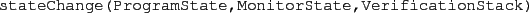
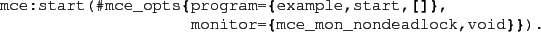

Next: Observational Power of Monitors Up: Running McErlang Previous: Listing of Available Algorithms Contents
Upon examining a state, and the program action leading to the state from the previous state, a monitor can either return a set of new monitor states (signalling an acceptable program state), or an error condition signalling that the program state failed the monitor.
There are two types of monitors in McErlang: ``safety monitors'' which are deterministic (i.e., return only a single next monitor state) and ``büchi monitors'' which implement Büchi automata. Such monitors may be nondeterministic, and in addition each monitor state is marked either ``accepting'' or ``non-accepting''. The @mce_alg_buechi@ verification algorithm signals an error if it discovers an infinite loop (through the combined program state and monitor state graph) containing only accepting monitor states.
In the McErlang repository we have included an associated tool, Ltl2Buchi, written by Hans Svensson, which can automatically translate a formula in Linear Temporal Logic (LTL) to a corresponding Büchi automaton. See Section 4 for details.
In the code listing in Figure 2 we show the source code for a simple safety to detect deadlocks.
A monitor should be an Erlang/OTP behaviour that conforms to the @mce_behav_monitor@ (see www.erlang.org for details on behaviours, in reality the only requirement on a McErlang monitor is that it exports three functions: @monitorType/0@, @init/1@ and @stateChange/3@. A ``Büchi'' monitor must also export a function @stateType/1@ which marks a state as either @accepting@ or @nonaccepting@.
The @stateChange/3@ function
gets called by the chosen verification
algorithm using three parameters:

In the example the safety monitor examines
the program state, and if all processes are
deadlocked, an atom @deadlock@
is returned (signalling a monitor failure),
and if a non-deadlock process exists
a new monitor state @ok,MonState@
(identical to the old state)
is returned.
We can check a general program with the above monitors by specifying
it in a @mce_opts@ record:
